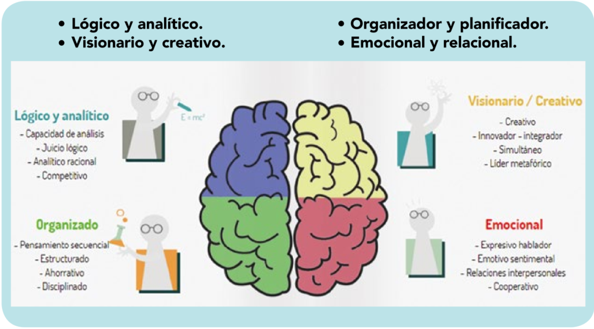

Elección de grupos
Tenemos que buscar grupos equilibrados, luego recomendamos usar alguna técnica (método Disc, Belbin, Hada, etc.) el más utilizado es el método Disc, que clasifica al alumnado en 4 categorías :
- Lógico y analítico.
- Visionario y creativo.
- Organizador y planificador.
- Emocional y relacional.

No hay técnicas infalibles, pero hay que intentar conseguir un reparto equitativo de estos perfiles.
Una vez creado los grupos puedes asignar diferentes roles :
| Posibles roles o cargos | Posibles funciones operativas |
|---|---|
| Responsable o coordinador/a | Coordina el trabajo del equipo. Anima a los/as miembros del equipo a avanzar en su aprendizaje. Tiene muy claro lo que el/la profesor/a quiere que aprendan. Dirige las revisiones periódicas del equipo. Dinamiza la redistribución de las tareas de algún miembro del equipo que esté ausente. |
| Ayudante del responsable o coordinador/a | Procura que no se pierda el tiempo. De vez en cuando, actúa de observador/a y anota, en una tabla en la que constan las tareas de cada cargo del equipo, la frecuencia con que éste/a las ejerce. |
| Portavoz | Habla en nombre del equipo cuando el/la profesor/a requiere su opinión. |
| Secretario/a | Rellena los formularios del Cuaderno del Equipo (Plan de Equipo, Diario Reflexivo…) Recuerda, de vez en cuando, a cada uno/a, los compromisos personales y, a todo el equipo, sus objetivos consignados en el Plan de Equipo. |
Custodia el Cuaderno del Equipo. | |Responsable del material |Custodia el material común del equipo y cuida de él. Se asegura de que todos/as los/as miembros del equipo mantengan limpia su zona de trabajo. |
Se pueden hacer contratos de equipo para que no quede en un mero nombramiento.
Es posible que los grupos se constituyan al inicio del curso, cuando aún no conocemos suficientemente a nuestro alumnado.
En ese caso, nos guiaremos por los resultados obtenidos con el método que apliquemos.
- En otros casos, los grupos se constituirán con el curso ya empezado, cuando ya tenemos cierto conocimiento del perfil de nuestro alumnado. Si es así, puedes hacer valer tu experiencia como docente para modificar, en caso necesario, los grupos y poder reorganizarlos atendiendo a otras circunstancias como:
- Alumnado que ayuda.
- Alumnado que necesita ser ayudado.
- Alumnado con diferentes problemáticas.
- Alumnado con faltas de asistencia y pérdida al derecho de evaluación.
- Etc.
- Si ves que un equipo no funciona, sería preferible intentar solventar los posibles problemas antes de deshacer el grupo. Es importante, en la medida de lo posible, contar con el apoyo del departamento de Orientación del centro, que seguro te ayudarán a mediar en los posibles conflictos que puedan surgir.
- En caso de conflictos graves, los equipos podrían reorganizarse en retos posteriores.
- Es importante establecer momentos de análisis para valorar la eficacia del trabajo del equipo.
- En el caso de experiencias “platinum” o “diamond”, quizá parte del alumnado no curse todos los módulos incluidos en el reto (por ejemplo, alumnos repetidores que ya tienen algún módulo superado). Una opción es que hagan el reto completo, aunque sólo se les evalúe de las partes en las que están matriculados. Si no fuese posible, podrían dividirse el reto en distintas partes, plantear mini-retos específicos, etc.
- Para el alumnado que haya perdido la evaluación continua, será necesario contemplar algún mecanismo en la programación para que sea evaluado.